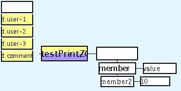

The ZOb system is a way to have data structures in the ZigZag-space, like objects in an object oriented language. The data structures are made up of members and values associated with them.
This is a picture of a ZOb. It shows two members and their values. In this ZOb, the data members are connected to each other on d.user-2 and to the ZOb on d.user-1.
On d.zob-type, the ZOb's masterclone is connected to a Clasm function that takes two parameters: instance and member. The function returns values for members from the given instance. This specific kind of ZOb that uses d.user-1 and d.user-2 is called a JavaZOb.
Using JavaZObs from Java code is simple. First you have to make a Clasm function such as the one in the picture above. This calls the function print zob with a clone of your zob as the parameter. When the function is executed, the source code of a Java class will be printed out on the console. You have to copy the output into a file with the correct filename (in this case it would be testPrintZOb.java) in the src/gzigzag/src/impl/zob/ folder.
This class has members with the same names as the members in the ZOb. The constructor takes one parameter, which is the cell of the ZOb instance.
On Thu, 10 Jan 2002 14:44:34 Tuomas wrote:
Actually, it might be reasonable to associate a type with ZOb members
in the structure, both for documentation and this. I'd like to know
that some parameter is a font, and another an int.